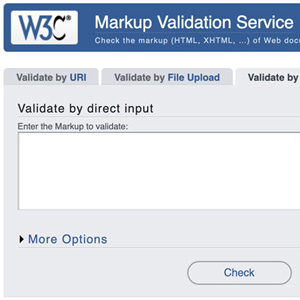
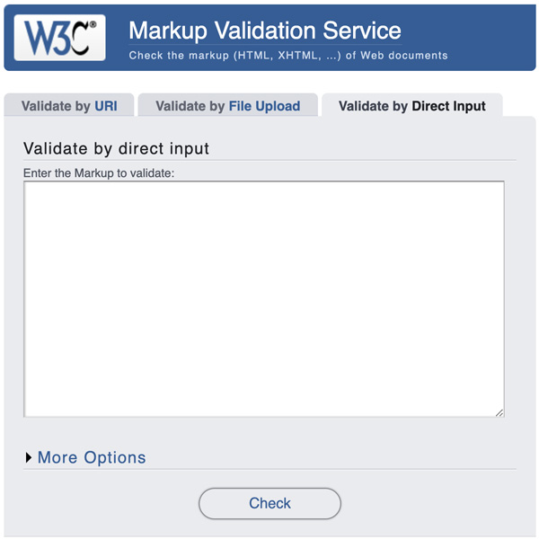
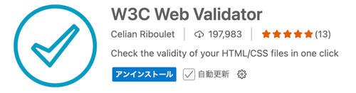
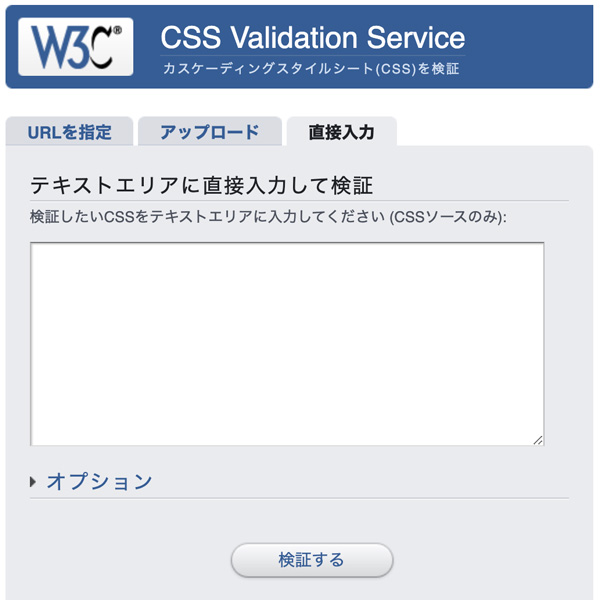

検証サイト

- プロンプト例
HTMLとCSSの検証の方法について解説して
- 「CSS」の記述に入る前に「HTML」の文法チェックを行います（必須）
- 「エラー」が表示された場合の、対処法にも慣れていきましょう
✅ HTMLとCSSの検証（バリデーション）の方法
1. なぜ検証が必要？
検証を行うことで次のようなメリットがあります。
- 表示崩れの原因を特定できる
- ブラウザ間の互換性が向上する
- アクセシビリティが改善される
- SEOに有利
- 保守性・品質の向上
🔎 HTMLの検証方法
W3C Markup Validation Service
- HTML文法チェック

① URLで検証
- 公開されているWebページをそのまま検証
👉️ URLを入力 → Check
② ファイルをアップロード
- ローカルのHTMLファイルを直接検証
③ 直接コードを貼り付け
- HTMLコードをコピペして検証
チェックされる内容
- タグの閉じ忘れ
- 属性ミス
- 不正な構文
- HTML仕様違反
W3C Web Validator
- 簡易的には「VS Code」内の拡張機能でもチェック可能

よくあるHTMLエラー例
<img src="test.png"> <p>文章 <div>コンテンツ</div>
- ❌ <p>の閉じタグ忘れ
- ❌ <p>の中に<div>は入れられない
🎨 CSSの検証方法
CSS Validation Service
- CSS文法チェック

使い方
HTMLとほぼ同じです。- URL指定
- ファイルアップロード
- 直接入力
よくあるCSSエラー例
.box { widht: 100px; color red; }
- ❌ widht → width のスペルミス
- ❌ : が抜けている
🛠️ 開発者ツールを使った検証（超重要）
ブラウザの開発者ツール（DevTools）は実務で最も使います。
開き方
- Windows / Linux: F12 or Ctrl + Shift + I
- Mac: Cmd + Option + I
HTMLの確認
- Elementsタブ → DOM構造確認
- 赤表示 → エラー箇所
CSSの確認
- Styles → 打ち消されているCSS
- 無効なプロパティは警告マーク
🧠 VS Codeでの自動検証（おすすめ）
Visual Studio Codeを使っているなら拡張機能でリアルタイム検証が可能です。
| 用途 | 拡張名 |
|---|---|
| HTML | HTMLHint |
| CSS | Stylelint |
| 全般 | Webhint |
🚀 実務で使うおすすめ検証フロー
① VS Code + 拡張でリアルタイム検証
↓
② W3C Validatorで最終チェック
↓
③ ブラウザ開発者ツールで表示確認
👉 この流れが一番効率的です。
Outliner
- HTMLのツリー構造のチェック
- Chromeの拡張機能